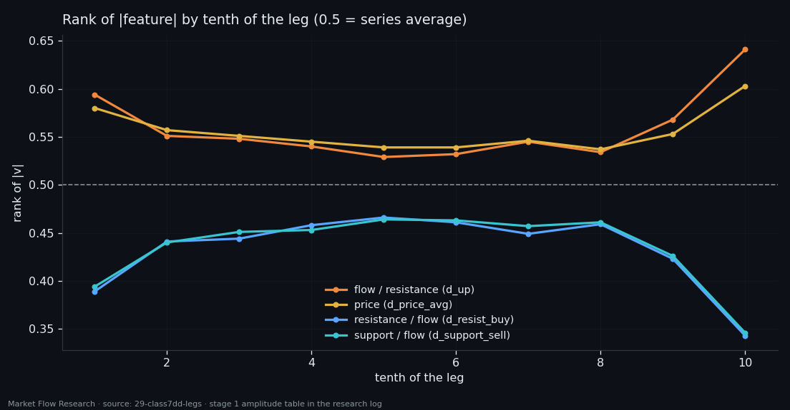
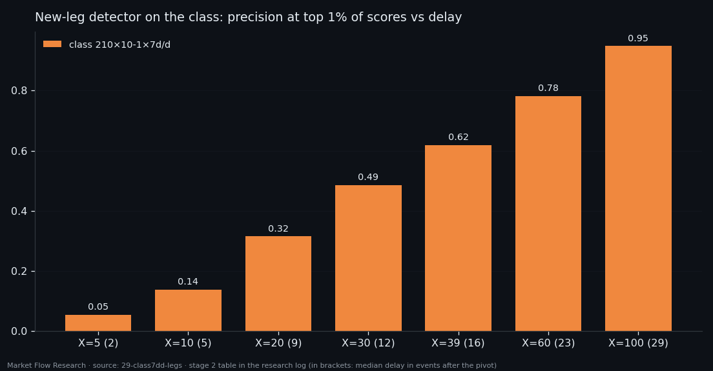
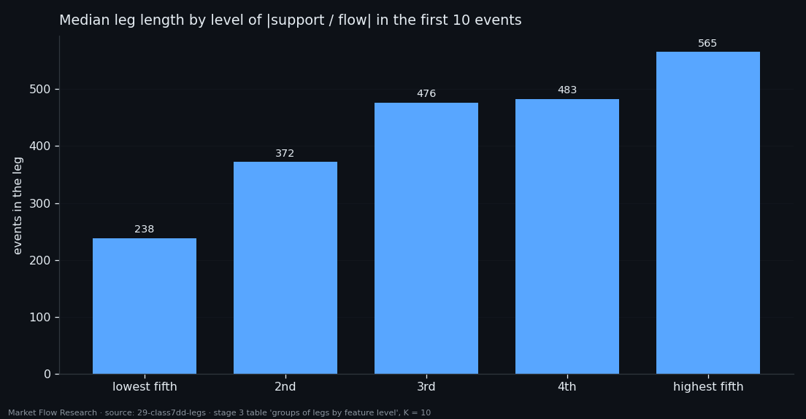
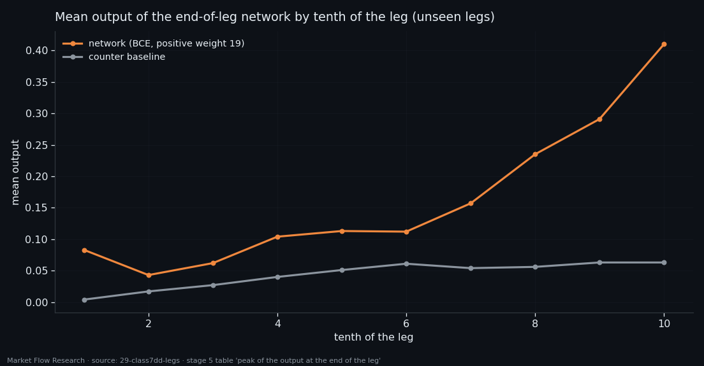

The Order Book Along a Leg — Slow Legs, Thin Edges, and a Signal at the End That Beats Chance ×4.6
We laid the seven features of our best order-book class along 554 zigzag legs of six coins. Every feature marks the edges of a leg, with the book thinning per unit of flow right before a pivot. The same features tell a short leg from a long one early — not the exact length, but its distribution. A memory network trained on "the last 5% of the leg" puts 23% of its loudest calls there, against 5% by chance. And the honest cost is written next to each number: detecting a new leg takes 12–16 events, a price-path detector still does better, and the zigzag labels themselves arrive late.
① Every feature marks the edges
Study 28 measured the leg on price. Here the same pass is applied to `210×10-1×7d/d` — six derivative ratios between book levels and flow, plus the price derivative — over 554 legs and 309,021 events on six coins.
Every one of the seven features marks the edges, with |t| from 9.6 to 10.2 between edges and middle (the same measurement on noise gives |t| < 4). They split into two opposite groups. Flow-type features (flow per resistance, flow per support, price) are higher at the edges — a U-shape with its bottom in the fifth tenth and its top in the last. Book-per-flow ratios are lower at the edges and lowest precisely in the last tenth (0.343 against 0.466 mid-leg): just before a pivot, each unit of trading meets less standing book. The end of a leg is sharper than its start in both groups — the opposite of the price-based picture, where the start dominated.
Length matters too. Long legs are slow: the amplitude of flow and price derivatives is lower (Spearman −0.59 to −0.61 with leg length), book-per-flow ratios higher (+0.54 to +0.60). The edge profile survives at any length; the level shifts, the difference stays. Same sign on all six coins.

② A new leg is visible after 12–16 events
Asked whether a 2.3% reversal happened within the last X events, gradient boosting on the class reaches AUC 0.737–0.762 for every X from 3 to 100 on the unseen weeks — longer history does not make the class see a reversal better. What moves is the price of the answer: 95% precision at the top 1% of scores needs X = 100 and arrives 29 events (1 h 42 min) after the pivot. The working middle is X = 30–39: 49–62% precision at 12–16 events delay. The fastest windows (X = 5–8, delay 2–5 events) are right only 3–11% of the time.
What works changes with the window: on short windows, the mean levels of support and resistance per flow; from X = 10 on, their spread — when a reversal is inside the window, the spread of those ratios drops, the same thinning seen in the last tenth. For comparison, the same detector on the price path (study 28) gives 0.830. Price is still the stronger description.

③ Short or long: the leg's length as a distribution
Stage 1 found that feature level and leg length are linked, but measured the level over the whole leg. Taken causally from the first K events after a pivot, the link holds: split legs into five equal groups by the level of support-per-flow in the first 10 events and the median lengths run 238 → 372 → 476 → 483 → 565. The quartiles overlap — the level moves the distribution of length rather than naming it.
A model on the head of the leg plus the previous leg forecasts length with Spearman +0.58 and AUC 0.806 by date, +0.44 and 0.716 on a held-out coin (K = 100); the median error is 162 events against 198 for the median. The class alone, with no price, already gives 0.697 on a held-out coin. The longer the leg has run, the better its end is seen (+0.32 at K = 10 → +0.50 at K = 100). On the unseen weeks, the detector plus this forecast catch 47 of 95 legs within their first 39 events — but with hundreds of false triggers inside legs, and a forecast of the end that is off by 112–563 events. An order of magnitude, not an event.

④ "The last 5% of the leg": 23% hits where chance gives 5%
The last stage labels the final 5% of each leg and trains a memory network on 131 channels from seven classes (451 legs train, 103 validation). The best run — plain binary cross-entropy, positive weight 19 — gives AUC 0.714 and AP 0.151 on validation, and its output climbs ninefold from the second tenth of the leg to the tenth. Taking its loudest 5% of events, 23.2% are truly in the last 5% of a leg: ×4.6 chance. A counter of events since the pivot, used the same way, scores 4.7% — worse than random, because its loudest events are the ends of the longest legs.
The honest caveat is in the same table. The network also sees counters reset at zigzag pivots, and a 2.3% pivot is confirmed only once price has moved 2.3% away — a median of 80 events (4.7 hours) later on validation. Removing the three counters costs AP 0.027; the class alone still hits 12.9% at its loudest 5%, 2.6× chance. So the class carries the result and the labels amplify it. Shaped losses (focal, "close") only made the whole leg hum at 0.5; what helped was training longer and demanding silence in the first 50 events of a leg. The network memorises train almost completely (AUC 0.998) — early stopping on validation is what keeps it useful.

Reproduce this study
- Research log (.md, Ukrainian): goal, data, plan, scripts, every confirmed stage and table — enough to rerun the study
- Reproduction kit (.zip): the study's scripts, project rules and base scripts that build every class
If this changed how you read the tape, the natural next step is Volume Is the Fuel — Not the Steering Wheel — We recorded the Binance order book every second for six coins over five months and ran eighteen tests on what volume really does.
Volume Is the Fuel — Not the Steering Wheel
We recorded the Binance order book every second for six coins over five months and ran eighteen tests on what volume really does.
About Market Research Lab — What We Collect and Why
Most market commentary is storytelling.
From Calm to Calm: a Standard for What Counts as a Signal (BTC)
We stopped defining market signals with a stopwatch.
The Wall That Goes Quiet: What Resting Liquidity Predicts
We measured resting limit liquidity sitting on both sides of the book second by second across six coins, and asked the only question that matters:….
Comments
Discussion is powered by GitHub. Enable it by adding secrets/giscus.json (repo IDs from giscus.app).